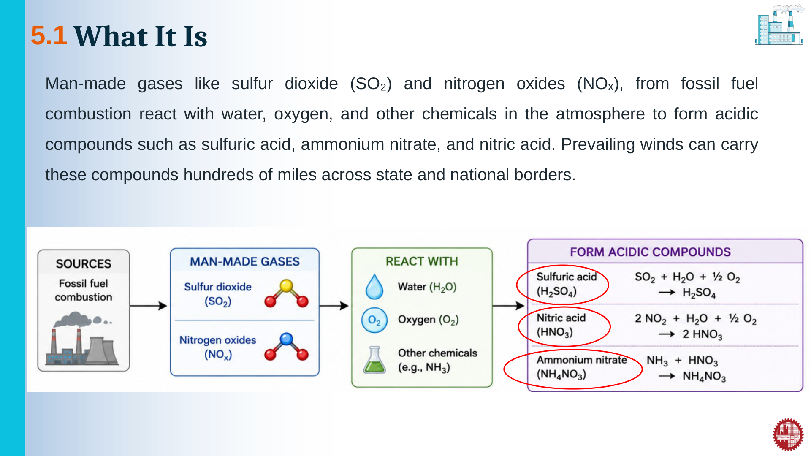
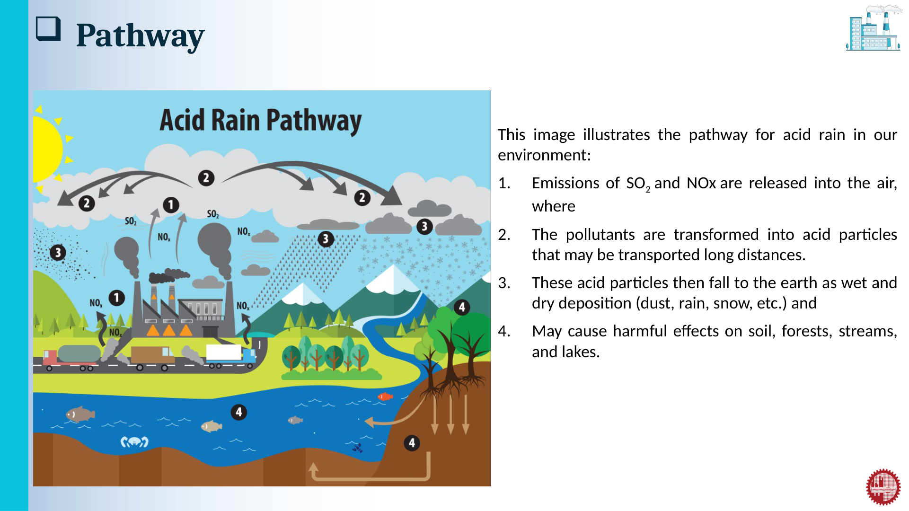
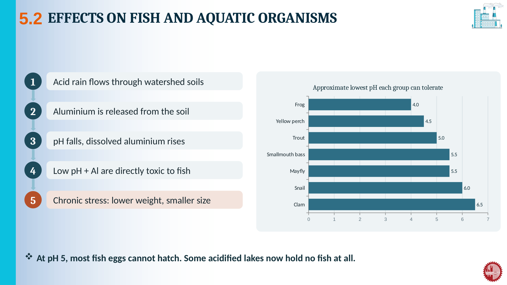

Chapter 5 covers acid rain — its formation from SO₂ and NOₓ, the difference between wet and dry deposition, its effects on ecosystems and infrastructure, and control measures. The wet vs. dry deposition distinction appears frequently in PYQs.
Acid rain (or acid deposition) refers to any form of precipitation with a pH lower than 5.6. Normal rain is slightly acidic (pH 5.6) because atmospheric CO₂ dissolves to form weak carbonic acid. Acid rain is caused by emissions of SO₂ and NOₓ.
| Pollutant | Major Sources | % from Source (approx.) |
|---|---|---|
| SO₂ | Coal-fired power plants | 65% |
| Oil refining and fuel oil burning | 15% | |
| Industrial processes (smelting, cement) | 20% | |
| NOₓ | Motor vehicles | 45% |
| Electric power plants | 30% | |
| Industrial combustion | 25% |

Complete cycle: SO₂/NOₓ emissions → atmospheric reactions → acid deposition

Chemical pathways: SO₂ → H₂SO₄ and NOₓ → HNO₃ in the atmosphere
Definition: Deposition of acidic pollutants (SO₄²⁻, NO₃⁻, H⁺) through precipitation — rain, snow, sleet, fog, or hail.
Mechanism: Cloud droplet absorbs SO₂ → SO₄²⁻; absorbs NO₂ → NO₃⁻; H⁺ released → low pH
Definition: Deposition of acidic particles and gases without precipitation — directly onto surfaces by gravitational settling, impaction, or gas absorption.
Forms: Gas absorption (SO₂, NO₂ directly onto leaves), particulate settling (sulfate aerosols, nitrate particles)
| Aspect | Wet Deposition | Dry Deposition |
|---|---|---|
| Medium | Precipitation (rain/snow/fog) | Dry air (gas/particle settling) |
| When | During rain events | Continuously (no rain needed) |
| Distance | Long-range transport (hundreds–thousands km) | Mostly near-source (local/regional) |
| Forms | Acid rain, acid snow, acid fog | SO₂ gas, sulfate particles, nitrate particles |
| pH measurable? | Yes (rain gauge + pH meter) | No direct pH; measured as mass flux |
| Effect timing | Acute "acid pulse" during rain | Gradual, continuous accumulation |

pH thresholds for aquatic life — fish, amphibians, insects affected as pH drops below 6.0
When lakes have already been acidified, adding lime (CaO) or limestone (CaCO₃) to water or soil neutralizes the acid:
Q: A rain sample has a H⁺ concentration of 2 × 10⁻⁴ mol/L. Calculate its pH and state whether it qualifies as acid rain.
Solution:
pH = −log₁₀(2 × 10⁻⁴)
= −log₁₀(2) − log₁₀(10⁻⁴)
= −0.301 − (−4)
= 3.699 ≈ 3.7
Since 3.7 < 5.6, this is acid rain (severely acidic).
| Aspect | Wet Deposition | Dry Deposition |
|---|---|---|
| Definition | Deposition of acidic pollutants via precipitation (rain, snow, fog) | Deposition of acidic gases/particles without precipitation |
| When | During rain/snow events | Continuously, rain not required |
| Distance | Long-range (hundreds–thousands km from source) | Mostly local/regional (near source) |
| Forms | Acid rain (pH<5.6), acid snow, acid fog | SO₂ gas absorption, sulfate aerosols, nitrate particles |
| Measurement | pH of collected precipitation | Mass flux per unit area per unit time |
| Examples | Rain over Sweden with pH 4.2 (from UK/Germany emissions) | SO₂ directly absorbed by pine needles; sulfate particles on building surfaces |
Acid rain (pH <5.6) is formed primarily from SO₂ and NOₓ emissions:
Sulfur Pathway:
Nitrogen Pathway:
H₂SO₄ and HNO₃ dissolve in cloud droplets and rain, lowering pH below 5.6. Normal rain has pH 5.6 due to dissolved CO₂ (carbonic acid). Acid rain pH typically ranges 3.0–5.5.
Effects on Aquatic Ecosystems:
Effects on Buildings/Infrastructure: